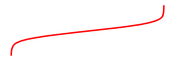

Store code outputs and insert into content¶
You often wish to run analyses in one notebook and insert them in your documents elsewhere. For example, if you’d like to include a figure, or if you want to cite an analysis that you have run.
The glue tool from MyST-NB
allows you to add a key to variables in a notebook,
then display those variables in your book by referencing the key. It
follows a two-step process:
Glue a variable to a name. Do this by using the
myst_nb.gluefunction on a variable that you’d like to re-use elsewhere in the book. You’ll give the variable a name that can be referenced later.Reference that variable from your page’s content. Then, when you are writing your content, insert the variable into your text by using a
{glue:}role.
We’ll cover each step in more detail below.
Gluing variables in your notebook¶
You can use myst_nb.glue() to assign the value of a variable to
a key of your choice. glue will store all of the information that is normally used to display
that variable (i.e., whatever happens when you display the variable by putting it at the end of a
code cell). Choose a key that you will remember, as you will use it later.
The following code glues a variable inside the notebook to the key "cool_text":
from myst_nb import glue
my_variable = "here is some text!"
glue("cool_text", my_variable)
'here is some text!'
You can then insert it into your text. Adding
{glue:}`cool_text` to your content results in the
following: 'here is some text!'.
Gluing numbers, plots, and tables¶
You can glue anything in your notebook and display it later with {glue:}. Here
we’ll show how to glue and paste numbers and images. We’ll simulate some
data and run a simple bootstrap on it. We’ll hide most of this process below,
to focus on the glueing part.
# Simulate some data and bootstrap the mean of the data
import numpy as np
import pandas as pd
import matplotlib.pyplot as plt
n_points = 10000
n_boots = 1000
mean, sd = (3, .2)
data = sd*np.random.randn(n_points) + mean
bootstrap_indices = np.random.randint(0, n_points, n_points*n_boots).reshape((n_boots, n_points))
In the cell below, data contains our data, and bootstrap_indices is a collection of sample indices in each bootstrap. Below we’ll calculate a few statistics of interest, and
glue() them into the notebook.
# Calculate the mean of a bunch of random samples
means = data[bootstrap_indices].mean(0)
# Calculate the 95% confidence interval for the mean
clo, chi = np.percentile(means, [2.5, 97.5])
# Store the values in our notebook
glue("boot_mean", means.mean())
glue("boot_clo", clo)
glue("boot_chi", chi)
3.000817935215019
2.988249155236873
3.0133911323084193
By default, glue will display the value of the variable you are gluing. This
is useful for sanity-checking its value at glue-time. If you’d like to prevent display,
use the display=False option. Note that below, we also overwrite the value of
boot_chi (but using the same value):
glue("boot_chi_notdisplayed", chi, display=False)
You can also glue visualizations, such as Matplotlib figures (here we use display=False to ensure that the figure isn’t plotted twice):
# Visualize the historgram with the intervals
fig, ax = plt.subplots()
ax.hist(means)
for ln in [clo, chi]:
ax.axvline(ln, ls='--', c='r')
ax.set_title("Bootstrap distribution and 95% CI")
# And a wider figure to show a timeseries
fig2, ax = plt.subplots(figsize=(6, 2))
ax.plot(np.sort(means), lw=3, c='r')
ax.set_axis_off()
glue("boot_fig", fig, display=False)
glue("sorted_means_fig", fig2, display=False)


The same can be done for DataFrames (or other table-like objects) as well.
bootstrap_subsets = data[bootstrap_indices][:3, :5].T
df = pd.DataFrame(bootstrap_subsets, columns=["first", "second", "third"])
glue("df_tbl", df)
| first | second | third | |
|---|---|---|---|
| 0 | 2.550719 | 2.959951 | 3.169411 |
| 1 | 3.353248 | 2.958612 | 2.879025 |
| 2 | 3.317518 | 2.964892 | 2.988907 |
| 3 | 2.920765 | 3.220203 | 2.757515 |
| 4 | 2.917758 | 2.915230 | 3.320699 |
小技巧
Since we are going to paste this figure into our document at a later point,
you may wish to remove the output here, using the remove-output tag
(see Removing code cell content).
Pasting glued variables into your page¶
Once you have glued variables to their names, you can then paste
those variables into your text in your book anywhere you like (even on other pages).
These variables can be pasted using one of the roles or directives in the glue family.
The glue role/directive¶
The simplest role and directive is glue:any,
which pastes the glued output in-line or as a block respectively,
with no additional formatting.
Simply add this:
```{glue:} your-key
```
For example, we’ll paste the plot we generated above with the following text:
```{glue:} boot_fig
```
Here’s how it looks:

Or we can paste in-line objects like so:
In-line text; {glue:}`boot_mean`, and a figure: {glue:}`boot_fig`.
In-line text; 3.000817935215019, and a figure: .
小技巧
We recommend using wider, shorter figures when plotting in-line, with a ratio around 6x2. For example, here’s an in-line figure of sorted means from our bootstrap: . It can be used to make a visual point that isn’t too complex! For more ideas, check out how sparklines are used.
Next we’ll cover some more specific pasting functionality, which gives you more control over how the pasted outputs look in your pages.
Controlling the pasted outputs¶
You can control the pasted outputs by using a sub-command of {glue:}. These are used like so:
{glue:subcommand}`key`. These subcommands allow you to control more of the look, feel, and
content of the pasted output.
小技巧
When you use {glue:} you are actually using shorthand for {glue:any}. This is a
generic command that doesn’t make many assumptions about what you are gluing.
The glue:text role¶
The glue:text role is specific to text outputs.
For example, the following text:
The mean of the bootstrapped distribution was {glue:text}`boot_mean` (95% confidence interval {glue:text}`boot_clo`/{glue:text}`boot_chi`).
Is rendered as: The mean of the bootstrapped distribution was 3.000817935215019 (95% confidence interval 2.988249155236873/3.0133911323084193)
注解
glue:text only works with glued variables that contain a text/plain output.
With glue:text we can add formatting to the output.
This is particularly useful if you are displaying numbers and
want to round the results. To add formatting, use this syntax:
{glue:text}`mykey:formatstring`
For example, My rounded mean: {glue:text}`boot_mean:.2f` will be rendered like this: My rounded mean: 3.00 (95% CI: 2.99/3.01).
The glue:figure directive¶
With glue:figure you can apply more formatting to figure-like objects,
such as giving them a caption and referenceable label. For example,
```{glue:figure} boot_fig
:figwidth: 300px
:name: "fig-boot"
This is a **caption**, with an embedded `{glue:text}` element: {glue:text}`boot_mean:.2f`!
```
produces the following figure:
图 10 This is a caption, with an embedded {glue:text} element: 3.00!¶
Later, the code
Here is a {ref}`reference to the figure <fig-boot>`
can be used to reference the figure.
Here is a reference to the figure
Here’s a table:
```{glue:figure} df_tbl
:figwidth: 300px
:name: "tbl:df"
A caption for a pandas table.
```
which gets rendered as
| first | second | third | |
|---|---|---|---|
| 0 | 2.550719 | 2.959951 | 3.169411 |
| 1 | 3.353248 | 2.958612 | 2.879025 |
| 2 | 3.317518 | 2.964892 | 2.988907 |
| 3 | 2.920765 | 3.220203 | 2.757515 |
| 4 | 2.917758 | 2.915230 | 3.320699 |
图 11 A caption for a pandas table.¶
The glue:math directive¶
The glue:math directive is specific to LaTeX math outputs
(glued variables that contain a text/latex MIME type),
and works similarly to the Sphinx math directive.
For example, with this code we glue an equation:
import sympy as sym
f = sym.Function('f')
y = sym.Function('y')
n = sym.symbols(r'\alpha')
f = y(n)-2*y(n-1/sym.pi)-5*y(n-2)
glue("sym_eq", sym.rsolve(f,y(n),[1,4]))
and now we can use the following code:
```{glue:math} sym_eq
:label: eq-sym
```
to insert the equation here:
注解
glue:math only works with glued variables that contain a text/latex output.
Advanced glue use-cases¶
Here are a few more specific and advanced uses of the glue submodule.
Pasting into tables¶
In addition to pasting blocks of outputs, or in-line with text, you can also paste directly into tables. This allows you to compose complex collections of structured data using outputs that were generated in other cells or other notebooks. For example, the following Markdown table:
| name | plot | mean | ci |
|:-------------------------------:|:-----------------------------:|---------------------------|---------------------------------------------------|
| histogram and raw text | {glue:}`boot_fig` | {glue:}`boot_mean` | {glue:}`boot_clo`-{glue:}`boot_chi` |
| sorted means and formatted text | {glue:}`sorted_means_fig` | {glue:text}`boot_mean:.3f` | {glue:text}`boot_clo:.3f`-{glue:text}`boot_chi:.3f` |
Results in:
name |
plot |
mean |
ci |
|---|---|---|---|
histogram and raw text |
|
|
|
sorted means and formatted text |
3.001 |
2.988-3.013 |